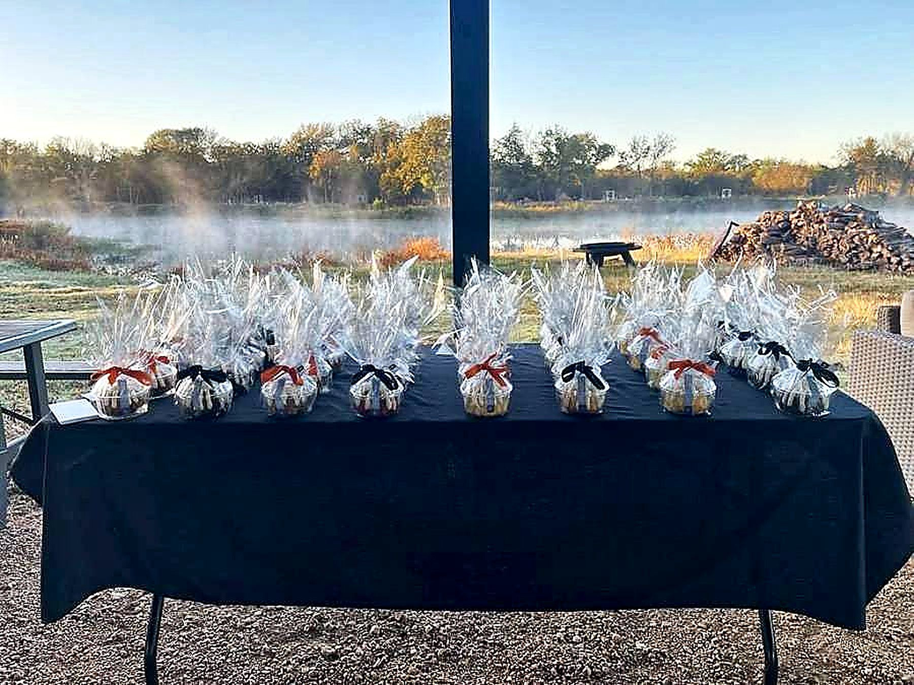

Day-of coordination
From $1,000
I take over about a week out, confirm every vendor, build your timeline and run the day, up to 12 hours on site.
Home / Wedding coordination / Day-of coordinator cost
Pricing guide · Dallas–Fort Worth
Clear, honest numbers so you can budget. Here's what my day-of, month-of and full planning packages include and cost.

What you get
Day-of coordination covers everything you need for your wedding day to run on time, with up to 12 hours on site.
Packages
Starting prices. Your quote is built on guest count, hours and what your day needs. Travel within DFW is included.
I take over about a week out, confirm every vendor, build your timeline and run the day, up to 12 hours on site.
I step in 4–6 weeks out to finalize logistics, confirm every vendor, build your timeline and own the run of show.
Concept to cleanup: design, budget, sourcing and managing every vendor, then I run the whole day. Or 15% of your budget, whichever is higher.
Add-ons
You sign with and pay each vendor directly, so you always know exactly what you're paying. A signed agreement and 50% deposit hold your date, and the balance is due 14 days before your wedding.
More wedding areas:
Questions
My day-of wedding coordination starts at $1,000 and includes up to 12 hours on site. Month-of coordination starts at $1,500 and full planning starts at $3,500.
Vendor confirmations, a minute-by-minute timeline, a final venue walkthrough, ceremony cues, decor setup and teardown, and troubleshooting all day.
Rehearsal management is $250, extra hours are $75 per hour, a second coordinator is $250 and vendor sourcing and booking is $300.
If you want your family enjoying the day instead of running it, yes. A coordinator handles vendors, timing and problems so nobody you love has to.
Ready when you are
Tell me about your event and I’ll send a tailored quote within 48 hours.